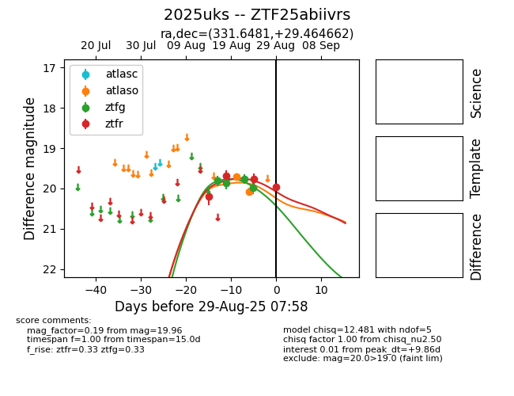

Target 2025uks at 2025-08-21 09:29, see:
FINK: fink-portal.org/ZTF25abiivrs
Lasair: lasair-ztf.lsst.ac.uk/objects/ZTF25abiivrs
ALeRCE: alerce.online/object/ZTF25abiivrs
TNS: wis-tns.org/object/2025uks
YSE: ziggy.ucolick.org/yse/transient_detail/2025uks
alt names
ZTF25abiivrs (ztf,alerce)
2025uks (tns,yse)
coordinates:
equatorial (ra, dec) = (331.6481,+29.46467)
galactic (l, b) = (85.0162,-21.01638)
photometry
last ztfg=19.87, ztfr=19.69
2 ztfg, 2 ztfr detections
